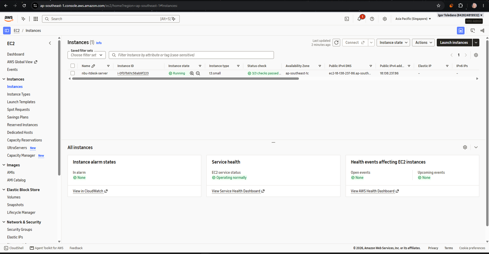
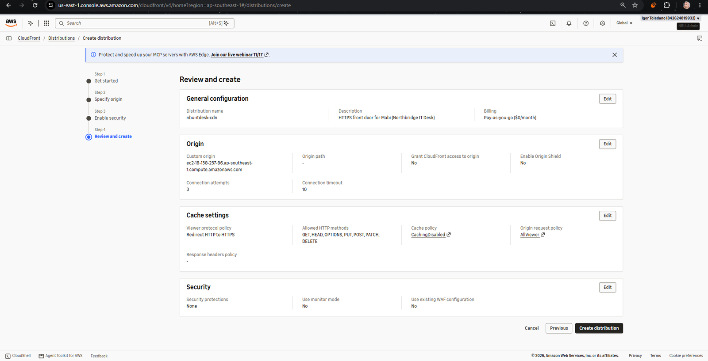

AWS infrastructure design
Where every part of Mabi runs, and how one question travels from a student to the model and back.
Mabi in AWS, ap-southeast-1 (Singapore). Solid lines are the path of a question; dashed lines are operations. Click a step or press Play. PNG version.

How a question travels
- Browser → CloudFront (HTTPS). The student opens
https://d2f1g5u307k6aa.cloudfront.net. CloudFront ends the TLS connection with its free certificate and redirects any plain-HTTP request to HTTPS. Caching is off, because every answer is personal. - CloudFront → EC2, port 80. CloudFront forwards the request to the server. The server's security group accepts port 80 only from the AWS-managed CloudFront prefix list (
pl-31a34658), so the server cannot be reached directly. - LibreChat ↔ MongoDB. The LibreChat container checks the login, loads the conversation and saves the new question in MongoDB (a second container on the same server, not exposed to the network).
- LibreChat ↔ Google Gemini API. LibreChat sends the question, the recent conversation and Mabi's instructions (rules + the IT Desk documents built from S3 at start-up) to
gemini-3.5-flash-lite. This is the only part outside AWS. - The answer comes back the same way, streamed word by word, and is saved in MongoDB. Within a minute the request logger records the question, duration, outcome, model and version in CloudWatch.
Every service and what it is for
| Layer | Service | What it does for Mabi |
|---|---|---|
| Edge / network | Amazon CloudFront | HTTPS front door with a free certificate; hides the server; the only allowed way in |
| Network | VPC default, security group | Port 80 from CloudFront only; no SSH, no database port |
| Compute | EC2 t3.small, Ubuntu 24.04, 2 GB swap | Runs Docker with the LibreChat (Mabi) and MongoDB containers |
| Database | MongoDB 8.0 in Docker, on the EC2 EBS disk | Users, conversations, messages |
| Storage | Amazon S3 (versioning on) | content/: the IT Desk documents Mabi answers from (the AWS integration). backups/mongodb/: nightly database backups, deleted after 14 days |
| Secrets | SSM Parameter Store (SecureString) | The Gemini API key; read at start-up, never in git |
| Admin access | SSM Session Manager | Browser shell on the server without SSH keys or an open port; every session is logged by CloudTrail |
| Monitoring | CloudWatch Logs, Metrics, Alarms, Dashboard | App and database logs (awslogs driver), request log, custom metrics NBU/Mabi, 9 alarms, dashboard Mabi-Operations |
| Alerting | Amazon SNS | Emails ALARM and OK messages to the admin |
| Health check | AWS Lambda + EventBridge | Visits /health through CloudFront every 5 minutes, like a real user would |
| Identity | IAM user + role, MFA; EC2 instance role | Humans switch into NBU-Admin; the server uses NBU-EC2-Role to read S3 and the key and to write logs |
| Audit / cost | CloudTrail, AWS Budgets | Records every API call in all regions; emails if spend goes above $0.01 of a $1 budget |
| Model | Google Gemini API (outside AWS) | The language model; free tier on a personal account; invented data only |

